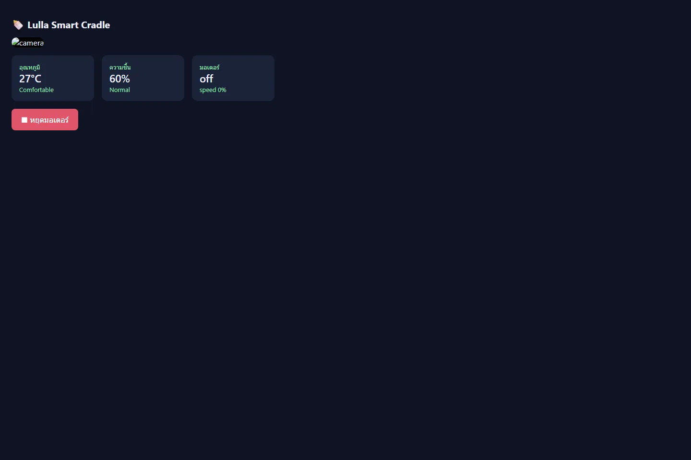

PROJECT 07 / IOT / COMPUTER VISION
Lulla Smart Cradle
ต้นแบบ IoT ที่เชื่อมกล้อง เซนเซอร์ มอเตอร์ และระบบแจ้งเตือน
- ROLE
- SYSTEM BUILDER
- STATUS
- CODE PROTOTYPE
- YEAR
- 2026
- FIELD
- IOT / COMPUTER VISION

ต้นแบบระบบเปลอัจฉริยะที่ตรวจการเคลื่อนไหว ใบหน้า และท่านอนจากกล้อง พร้อมอ่านสภาพแวดล้อม ควบคุมมอเตอร์ และส่งสถานะผ่านเว็บกับ Telegram
CONTEXT / PROBLEM
ปัญหาที่เลือกทำ
โจทย์ของระบบไม่ใช่เพียงเปิดมอเตอร์ แต่คือการประสานกล้อง เซนเซอร์ การควบคุม และการแจ้งเตือน โดยมี safe default เมื่อฮาร์ดแวร์หรือบริการบางส่วนไม่พร้อม
OWNERSHIP / CONTRIBUTION
ส่วนที่ผมรับผิดชอบ
พัฒนาโครงระบบ Python แยกโมดูลกล้อง เซนเซอร์ มอเตอร์ Telegram และ dashboard พร้อม mock mode สำหรับทดสอบ logic บนคอมพิวเตอร์ที่ไม่มี Raspberry Pi
- 01รวม motion detection, face detection และ pose heuristic ใน processing loop เดียว
- 02ออกแบบการหยุดมอเตอร์ การแจ้งเตือน และ emergency state
- 03สร้าง dashboard ที่ปิดบริการโดยอัตโนมัติหากยังไม่ตั้งรหัสผ่าน
- 04เพิ่ม mock/fallback path เพื่อแยกการทดสอบซอฟต์แวร์ออกจากความพร้อมของฮาร์ดแวร์
SYSTEM / PROCESS
ระบบและกระบวนการ
- 01SENSE
อ่านภาพ อุณหภูมิ ความชื้น และสถานะอุปกรณ์
- 02INTERPRET
ประเมินการเคลื่อนไหว ใบหน้า และท่านอนด้วย OpenCV/MediaPipe
- 03CONTROL
สั่งมอเตอร์ตาม timer พร้อม emergency stop
- 04NOTIFY
แสดง dashboard และแจ้งเหตุผ่าน Telegram โดยจำกัดการเข้าถึง
VALIDATION / WHAT THE EVIDENCE SAYS
สิ่งที่ยืนยันได้ในตอนนี้
ตรวจพบโค้ดครบทุกโมดูลและสามารถเปิด dashboard ใน mock environment ได้ แต่ยังไม่มีภาพต้นแบบฮาร์ดแวร์ วงจร หรือผลทดสอบกับเปลจริง จึงนำเสนอเป็น code prototype
EVIDENCE TYPES
LIMITATIONS / NEXT QUESTIONS
ข้อจำกัดที่ไม่ซ่อน
- การประเมินท่านอนเป็น heuristic จาก 2D pose และอาจเกิด false positive/false negative
- ไม่ใช่อุปกรณ์การแพทย์หรือระบบป้องกัน SIDS และห้ามใช้แทนการดูแลของผู้ปกครอง
- ยังไม่มีผลทดสอบ latency, uptime, sensor calibration หรือการทำงานระยะยาวบน Raspberry Pi
- ต้องเพิ่มภาพฮาร์ดแวร์และ circuit diagram หากมีการประกอบต้นแบบจริง
EVIDENCE / VISUAL RECORD